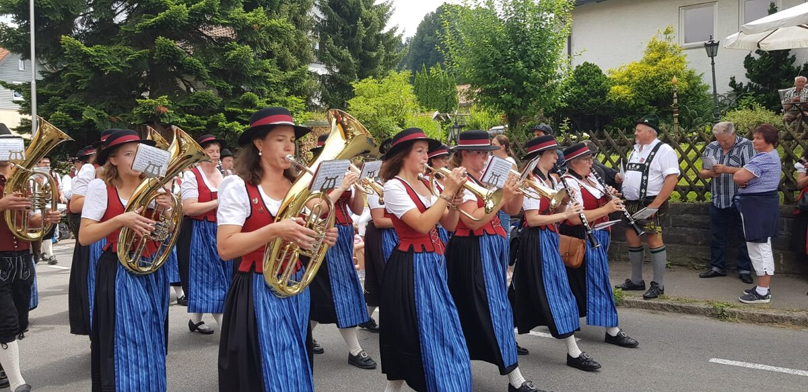
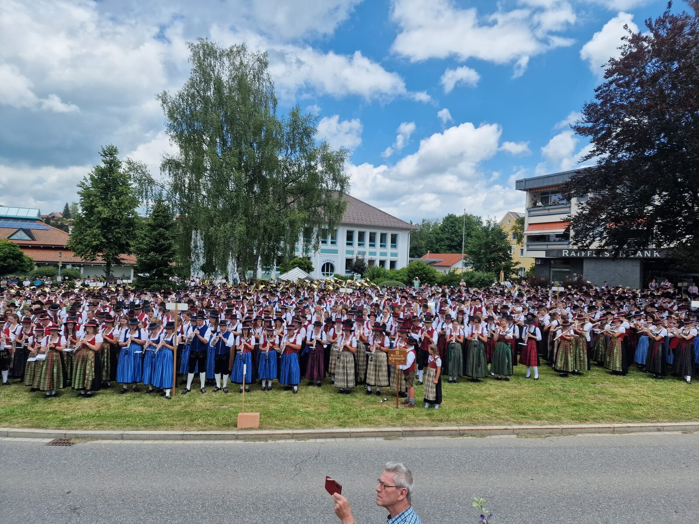
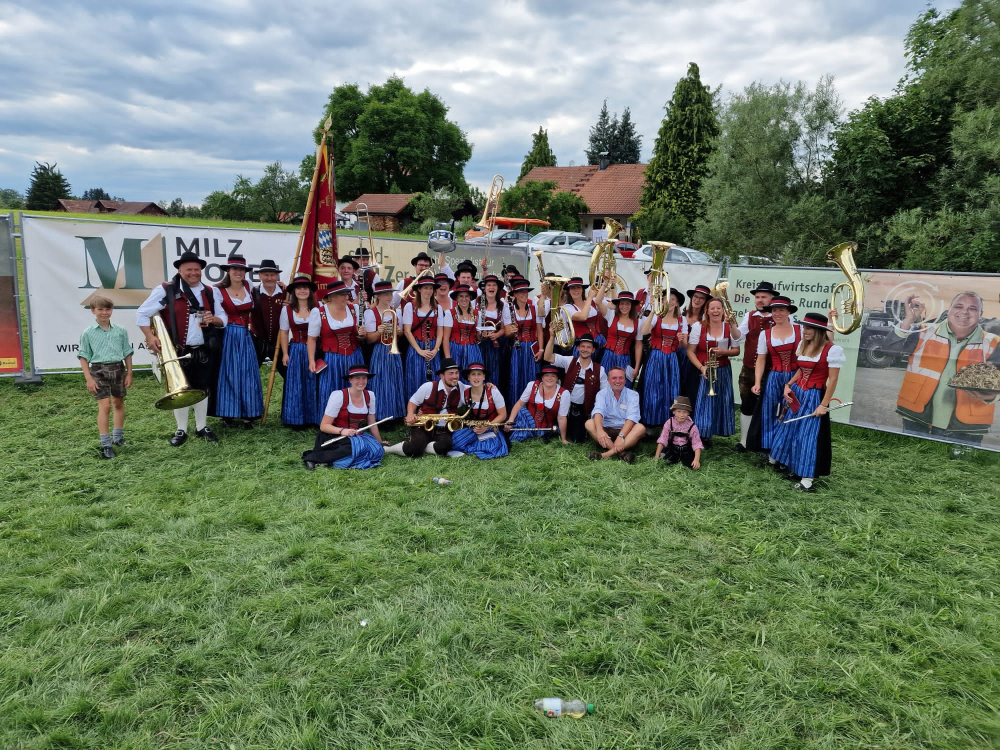
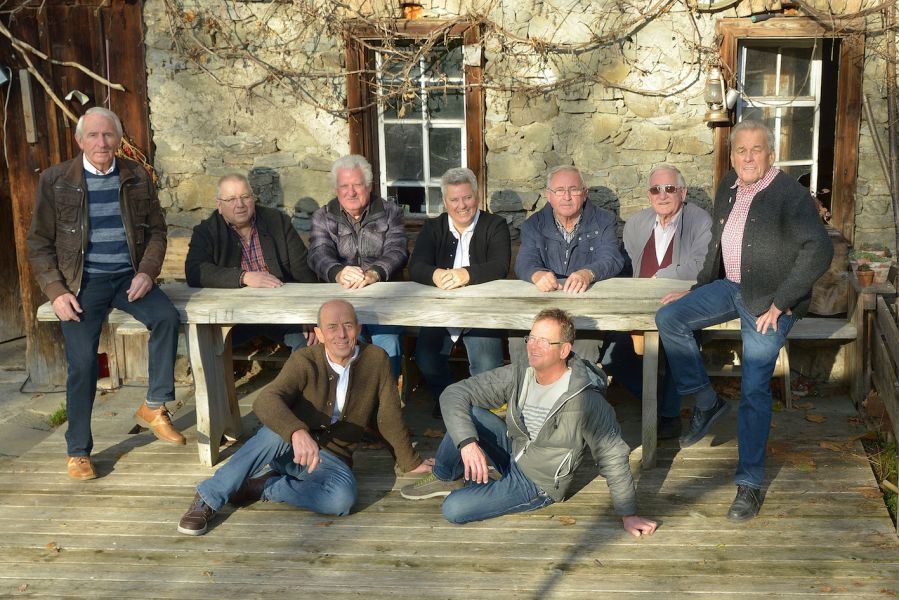

Überblick
Musikkapelle
Tradition trifft Gemeinschaft – seit 1886 machen wir zusammen Musik.
Von Märschen und Polkas bis zu modernen Arrangements – unsere Kapelle vereint rund 30 aktive Musikerinnen und Musikanten. Hier findest du alles rund um Organisation, Register und Geschichte.

Vorstandschaft
Das Team hinter der Kapelle – von der musikalischen Leitung bis zur Organisation.
Zur Vorstandschaft →
Register
Von Holz über Blech bis Schlagwerk – ein Überblick über unsere Besetzung.
Zu den Registern →
Verein im Wandel
Unsere Chronik von der Gründung 1886 bis heute.
Zur Chronik →
Ehrenmitglieder
Dank an alle, die unsere Kapelle über Jahrzehnte geprägt haben.
Zu den Ehrenmitgliedern →